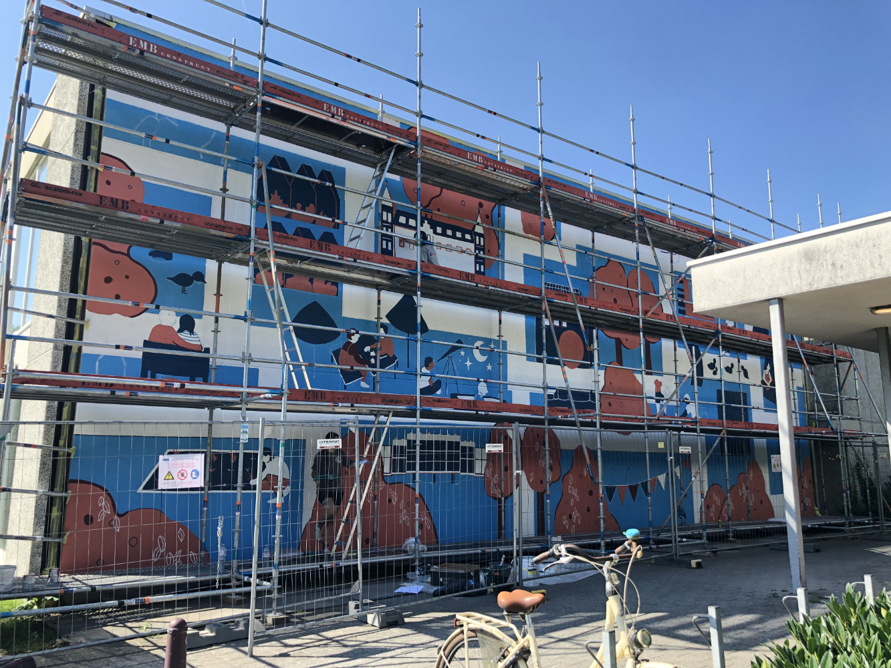
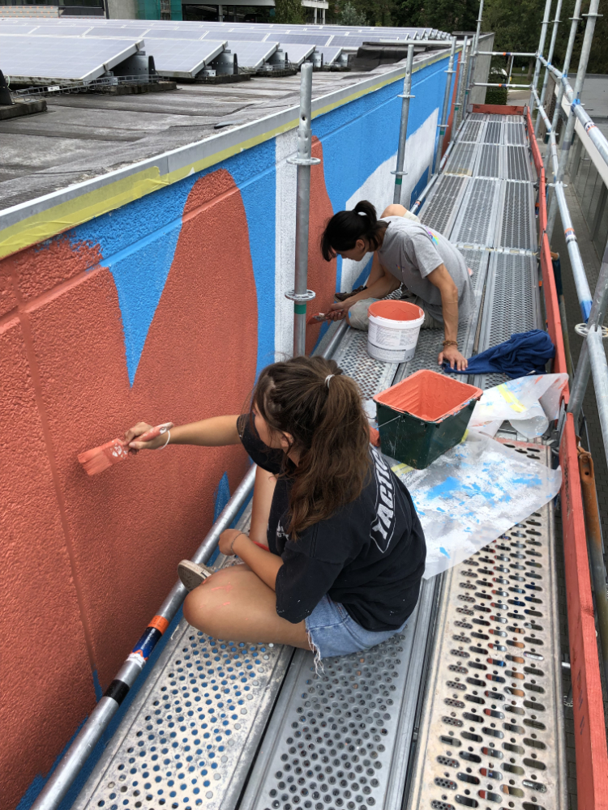
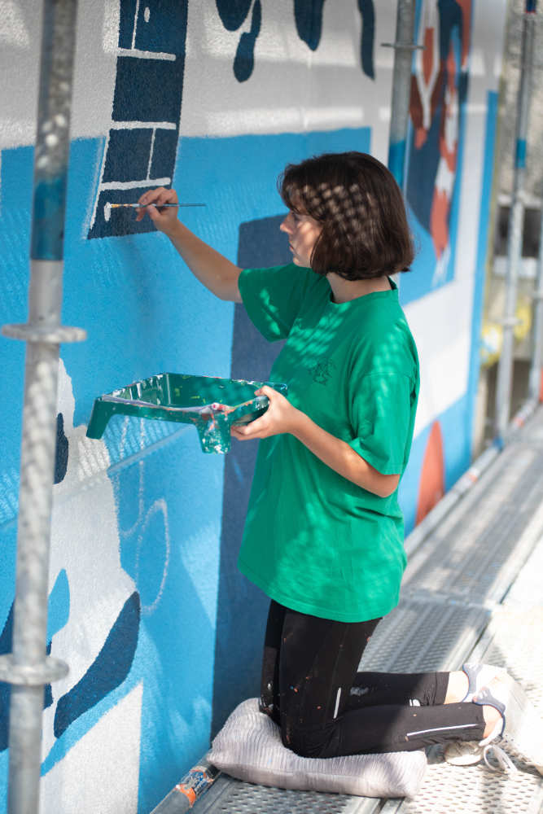
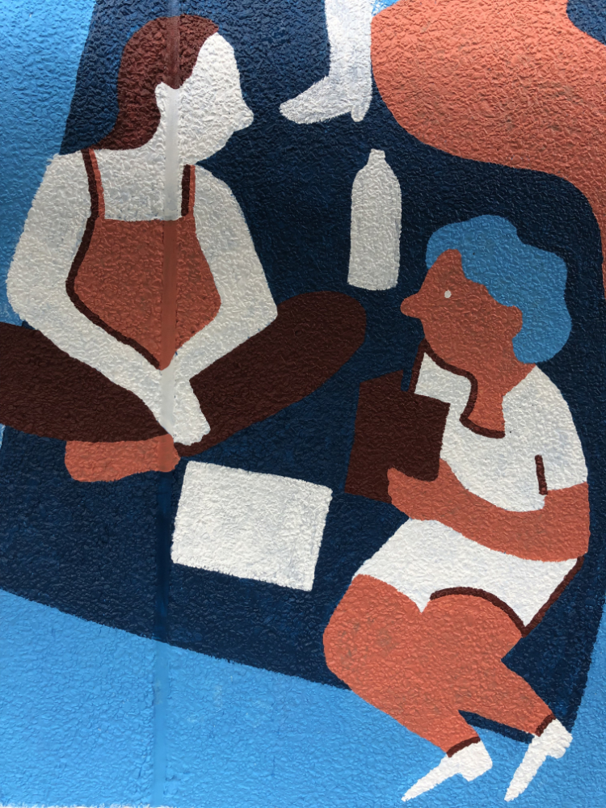
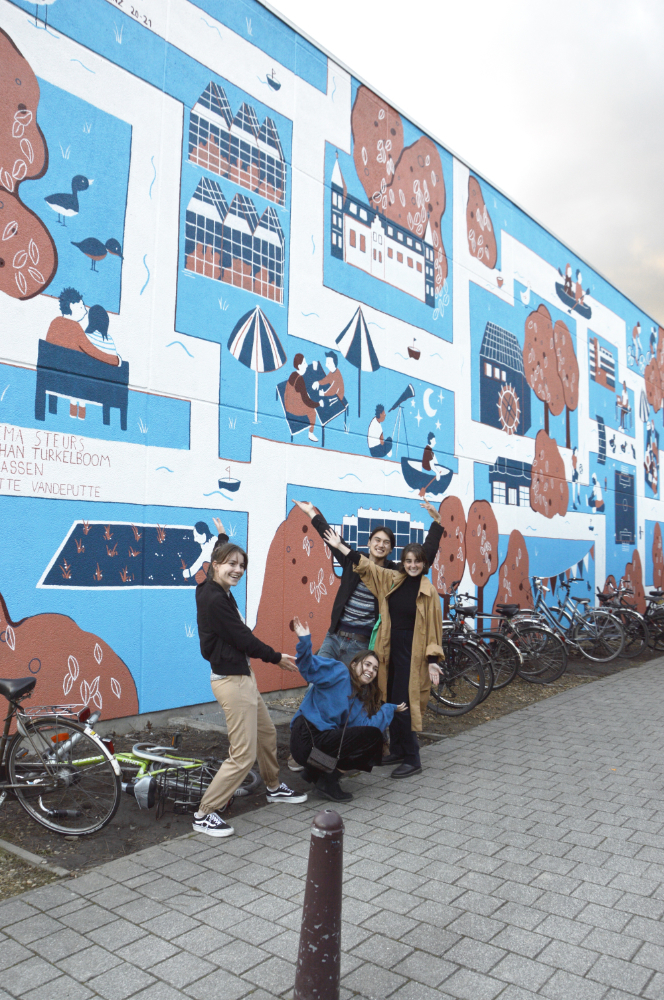

KU Leuven Muurschildering
Samen met Iracema Steurs, Eva Maassen en Jonathan Turkelboom beschilderde ik in 2021 deze muur van 7 m x 18 m op de Arenberg Campus van KU Leuven.
Ons ontwerp had als doel de studenten samen te brengen door de studierichtingen en faciliteiten op deze campus voor te stellen.




